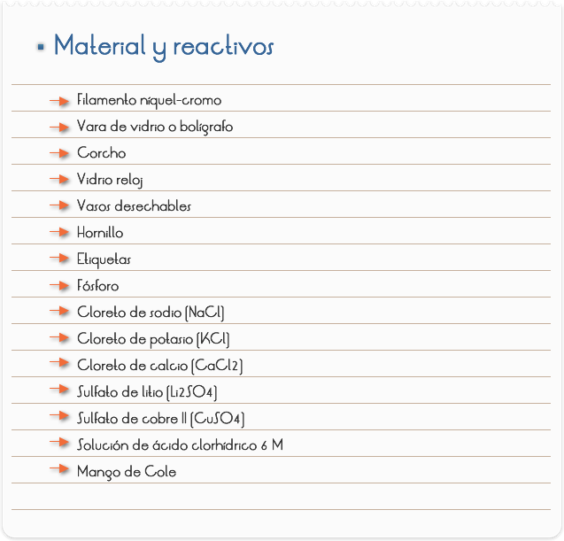
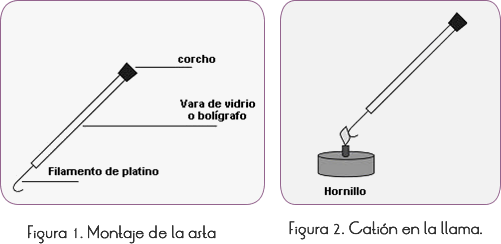
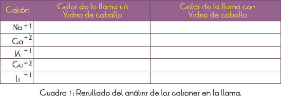
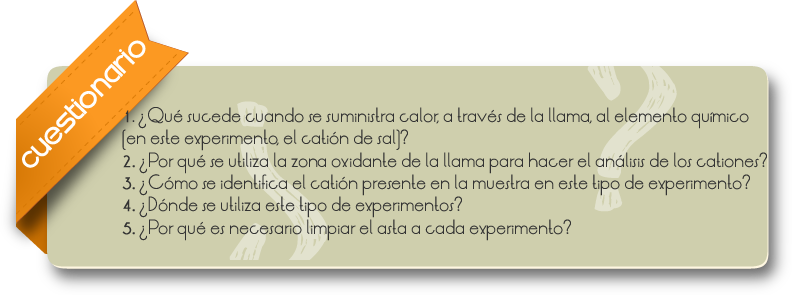
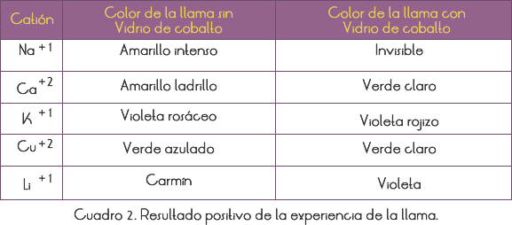
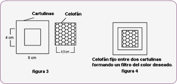

Introducción
Las sustancias cuando son activadas por una fuente de energía, emiten radiaciones en longitudes de onda que son característicos de los elementos que las componen.
La energía producida en la zona oxidante de la llama del hornillo es suficiente para activar los electrones de ciertos cationes, haciendo que se eleven a niveles de mayor energía. Los cationes al tener sus electrones activados se mueven en dirección a la zona reductora o a la zona neutra de la llama. Esto hace que los electrones vuelvan a los niveles de energía que ocupaban antes, devolviendo la energía recibida en la zona oxidante bajo la forma de luz visible, cuya longitud de onda corresponde a un determinado color, y esa es la característica de la especie y catión. Entonces, se puede identificar la presencia de un determinado catión en una muestra por el color que la llama adquiere al contacto con la misma.
Ese tipo de análisis es denominado de espectroscopia, que posibilita la identificación de un cierto número de elementos, por medio de ensayos por la coloración de la llama. Ese ensayo no es conclusivo, pero sirve como indicio y orientación de la investigación que posteriormente se vaya a emplear. La experiencia de la llama es una de las más rápidas y simples para identificar la presencia de determinados cationes. Es muy eficaz para iones metálicos como sodio, potasio, cobre, bario y otros. De esa forma, se hace fácil determinar evidencias de sulfato de cobre en frutas, pues éste es identificado por la coloración verde-intensa producida en la llama; sodio y potasio en la sandía, que trasmitirán a la llama coloración amarilla y violeta, respectivamente. El color de los fuegos artificiales se debe a la presencia de los elementos sodio (amarillo), estroncio (rojo), bario (verde) y cobre (verde azulado), agregados durante su fabricación.
Objetivo
Identificar la presencia de un determinado catión en una muestra, a través del color que la llama presenta al contacto con la referida muestra.

1. Montar el asta sujetando el filamento de platino (o níquel-cromo) en una de las extremidades y ensartando un corcho en el otro, curvando la punta del filamento para que pueda retener los cristales de la muestra a ser testada (Figura 1).
2. Colocar en un vaso de precipitado pequeño un poco de ácido clorhídrico 6 M y tapar con un vidrio reloj (con cuidado porque este ácido es volátil y tóxico).
3. Colocar las muestras en vasitos y rotular.
4. Mojar el filamento en el ácido, juntarlo con los cristales de la muestra y llevarlo a la llama oxidante del hornillo (Figura 2).
5. Repetir la operación para cada muestra hasta observar bien el color de la llama característica del ión en estudio (catión de la sal).
6. Limpiar el filamento después de cada prueba. Para hacer la limpieza sumerja el filamento en una solución 6 M de HCl, y caliéntelo en la zona reductora hasta que la presencia del filamento no produzca ninguna coloración a la llama.
7. Traspasar para el Cuadro 1, los colores observados durante el análisis de cada catión en la llama.
8. Para eliminar problemas de interferencia de impurezas del catión sodio en las muestras (la llama del catión disfraza la de otros cationes), debe observarse la llama a través de un vidrio de cobalto. Si no se dispone del vidrio, puede sobreponer dos pedazos de papel celofán, uno de color azul y otro rojo.
9. La prueba de identificación de cada elemento será positivo, si los colores concordasen con los del cuadro 2.
10. Para obtener un material simple que substituya el vidrio de cobalto, sobreponga dos pedazos de papel celofán, de acuerdo con el esquema 01.
11. Durante el experimento, se debe proceder con cautela durante la limpieza del asta, pues el ácido clorhídrico (HCl) es volátil y tóxico (el recipiente que lo contiene, debe quedar siempre tapado).
12. Este experimento puede ser usado, incluso, para explicar las transiciones electrónicas.
Observación: El profesor puede optar por usar el mango de Cole (material del LDM), si prefiere realizar esta práctica apenas de modo demostrativo.



RESULTADOS Y CONCLUSIONES

ESQUEMA 1
1. Recortar dos pedazos de cartulina de 5x5 cm.
2. Hacer una ventana a aproximadamente 1 cm, del margen, en cada cartulina (Figura 3)
3. Recortar dos pedazos de papel celofán de 4,5x4,5 cm. Uno azul y otro rojo.
4. Pegar los pedazos de celofán en las ventanas de cada cartulina (Figura 4) y sobreponer los dos.
